컴퓨터활용능력-1급 (2007-10-07 기출문제)
1과목: 컴퓨터 일반
1. 다음 중 아날로그 신호와 디지털 신호에 대한 설명으로 옳지 않은 것은?
- 범용 컴퓨터는 아날로그 신호를 취급하기 때문에 정밀도가 제한적이다.
- 아날로그 신호는 시간에 따라 크기가 연속적으로 변하는 정보를 말한다.
- 디지털 신호는 시간에 따라 이산적으로 변하는 정보를 말한다.
- 디지털 신호는 복호화(Decoding) 과정을 통해 아날로그 신호로 변환한다.
(정답률: 62%)

2. 다음 중 무선인터넷과 관련된 용어가 아닌 것은?
- VoIP
- BREW
- WIPI
- GVM
(정답률: 43%)
3. 메모장에서 저장된 텍스트 문서를 열 때마다 시스템 클럭을 참조하여 현재의 시간과 날짜를 문서의 끝에 삽입하고자 한다. 다음 중 옳은 것은?
- 문서의 첫 행 맨 왼쪽에 대문자로 .LOG라고 입력한다.
- 메모장의 [삽입]-[시간/날짜]를 이용한다.
- 문서를 작성한 후 [파일]-[인쇄]-[시간/날짜]를 이용한다.
- 시스템 트레이에 있는 시간을 마우스 왼쪽 버튼을 이용하여 문서의 원하는 위치에 놓는다.
(정답률: 46%)
4. 다음 중 서로 독립되어 컴파일된 여러 개의 목적 프로그램을 하나의 실행 가능한 로드 모듈로 만드는 기능을 하는 프로그램은 무엇인가?
- 정렬/합병 프로그램
- 언어 번역 프로그램
- 다중 프로그램
- 연계 편집 프로그램
(정답률: 32%)
5. 다음 중 보안에 대한 용어 설명으로 옳지 않은 것은?
- SSL : 인터넷 상거래 시 필요한 개인 정보를 보호하기 위한 개인 정보 유지 프로토콜이다.
- PGP : 인터넷에서 전달하는 전자우편을 다른 사람이 받아 볼 수 없도록 암호화하고, 받은 전자우편의 암호를 해석해주는 프로그램을 말한다.
- DES : 평문을 64비트의 암호문으로 만드는 공개키 암호로 64비트의 키가 사용된다.
- PEM : 인터넷 환경에서 이메일은 무수한 호스트를 거쳐 전송된다. 전송되는 과정에서 얼마든지 탈취되거나 변조 또는 위조될 가능성이 있으므로 내용을 암호화하여 제3자가 알아볼 수 없게 한다.
(정답률: 60%)
6. 다음 중 한글 Windows XP에서 네트워크 공유에 대한 설명으로 옳지 않은 것은?
- 다른 사람들이 자신의 자료에 접근하여 사용할 수 있도록 설정해 놓은 것이다.
- 프로그램, 문서, 비디오, 소리, 그림 등의 데이터에 대하여 공유가 가능하다.
- 내 컴퓨터에 연결되어 있는 프린터를 다른 컴퓨터에서 사용할 수 있도록 프린터 공유가 가능하다.
- 공유된 폴더는 삭제할 수 없다.
(정답률: 81%)
7. 다음 중 USB에 대한 설명으로 옳지 않은 것은?
- USB 방식의 마우스와 키보드, PC 카메라, 디지털 카메라, 모니터 등이 연결되는 포트이다.
- USB 1.1에서는 최대 12Mbps, USB 2.0에서는 최대 480Mbps의 전송 속도를 가지며 최대 127대의 장치를 연결할 수 있다.
- USB 기술은 음성 혹은 영상과 같은 데이터를 주변기기에서 사용자의 컴퓨터로 기존 시리얼 포트보다는 빠르게 전송할 수 없지만 사용에는 아주 편리하다.
- USB 장치들은 핫 플러그 앤 플레이를 지원하므로 컴퓨터 전원이 켜져 있는 상태에서도 장치를 연결시켜 사용할 수 있다.
(정답률: 67%)
8. 인터넷상에서 동영상 등 멀티미디어 데이터를 다운로드하면서 동시에 재생하는 기술 용어는?
- Messenger
- Streaming
- Chatting
- Networking
(정답률: 87%)
9. 다음 중 한글 Windows XP의 레지스트리에 대한 설명으로 옳지 않은 것은?
- 레지스트리의 내용을 수정하려면 Regedit와 같은 레지스트리 편집 프로그램을 사용해야 한다.
- 레지스트리 편집기 실행은 [내 컴퓨터] 주소창에 Regedit를 입력하고 <Enter>를 누른다.
- 사용자 프로필과 관련된 부분은 ntuser.dat 파일에 저장된다.
- Windows를 동작시키고 응용 프로그램을 실행하는데 필요한 각종 정보를 담고 있는 일종의 시스템 데이터베이스이다.
(정답률: 47%)
10. 다음 중 일반적으로 RAID(Redundant Array of Inexpensive Disk)를 사용하는 목적으로 볼 수 없는 것은?
- 전송 속도 향상
- 한 개의 대용량 디스크를 여러 개의 디스크처럼 나누어 관리
- 안정성 향상
- 데이터 복구의 용이성
(정답률: 51%)
11. 다음 중 한글 Windows XP의 [디스플레이 등록정보]-[설정] 탭의 [고급] 정보에 대한 설명으로 잘못된 것은?
- [일반] 탭에서 디스플레이 DPI 설정을 할 수 있다.
- [어댑터] 탭에서 그래픽 콘트롤러의 종류를 알 수 있다.
- [문제 해결] 탭에서 [모니터 설정]을 할 수 있다.
- [색 관리] 탭에서 색상 프로필을 추가할 수 있다.
(정답률: 56%)
12. 다음 중 멀티미디어 자료를 인터넷에서 실시간으로 전송 받으면서 보거나 들을 수 있는 방식이 아닌 것은?
- 스트림웍스(Streamworks)
- 리얼오디오(Real Audio)
- 비디오라이브(VDOLive)
- 드림위버(Dreamweaver)
(정답률: 62%)
13. 한글 Windows XP상에서 새 하드웨어를 추가 설치할 때 꼭 고려해야 할 사항이 아닌 것은?(문제에 오류가 있어서 3번 4번을 정답 처리한 문제입니다. 여기서는 3번을 누르시면 정답 처리 됩니다.)
- 현재 컴퓨터에서 새 하드웨어를 지원할 수 있는지 여부
- 구입할 하드웨어의 연결 방식
- 하드디스크에 여분의 용량이 있는지 확인
- 새 하드웨어가 PnP 기능을 지원하는지 여부
(정답률: 81%)
14. 다음 중 송신측 회선과 수신측 회선을 미리 연결하여 접속 경로를 설정한 후 연결이 되면 통신이 끝날 때까지 설정된 회선이 유지되므로 교환기 내에서 처리시간 지연이 없고 즉시성이 유지되는 장점을 가진 정보 교환 방식은 어느 것인가?
- 분기 회선방식
- 회선 교환방식
- 메시지 교환방식
- 패킷 교환방식
(정답률: 59%)
15. 다음 중 한글 Windows XP의 네트워크 설정에서 자신의 작업 그룹끼리 연결하기 위해서 어떤 프로토콜을 설치해야 하는가?
- IPX/SPX
- TCP/IP
- Netbeui
- IBM DIC
(정답률: 32%)
16. 다음 중 아래의 설명과 관련된 용어는 어느 것인가?
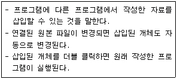
- 클립보드(Clipboard)
- 연결 프로그램
- 바로 가기 만들기
- 개체 삽입과 연결(OLE)
(정답률: 75%)
17. 다음 중 자바 언어의 특징이 아닌 것은?
- 자바는 바이트 코드라는 중립적인 구조의 실행 코드를 만들어 플랫폼 독립적이다.
- 멀티스레드 기능을 제공하므로 여러 작업을 동시에 처리할 수 있다.
- C#에서 사용되는 구조체, 공용체, 포인터를 제공함으로 데이터 구조를 다양하게 사용할 수 있다.
- 객체지향 언어이므로 관리 및 유지가 편리하다.
(정답률: 48%)
18. 접속량이 많은 사이트는 네트워크에서 트래픽이 빈번해지기 때문에 접속이 힘들고 속도가 떨어지는데, 이것을 방지하기 위해 세계 도처의 다른 사이트에 자신이 보유하고 있는 것과 동일한 정보를 복사하여 저장시켜 놓는 것을 무엇이라고 하는가?
- 포털 사이트
- 미러 사이트
- Meta Mall
- WAP
(정답률: 73%)
19. 다음 중 광 디스크의 종류로 볼 수 없는 것은?
- VOD(Video On Demand)
- VD(Video Disk)
- CD(Compact Disk)
- DVD(Digital Video Disk)
(정답률: 56%)
20. 다음 중 중앙처리장치와 입출력장치 사이의 속도차이로 인한 문제점을 해결해주는 장치는?
- 범용 레지스터 장치
- 터미널 장치
- 콘솔장치
- 채널 제어 장치
(정답률: 70%)
2과목: 스프레드시트 일반
21. 다음과 같은 시트에서 [A9] 셀에 아래의 수식을 입력했을 때 계산 결과로 올바른 것은?
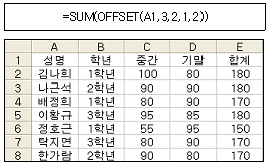
- 80
- 90
- 170
- 500
(정답률: 48%)
22. 대출원금 3천 만 원을 년 이자율 6.5%로 3년 동안 매월 말 상환하려고 한다. 매월 불입 금액을 계산하는 함수식으로 옳은 것은?
- =PMT(6.5%/12, 3*12, -30000000)
- =PMT(6.5%, 3*12, -30000000)
- =IPMT(6.5%/12, 3*12, 30000000)
- =IPMT(6.5%, 3*12, -30000000)
(정답률: 59%)
23. 다음 중 배열 수식에 관한 설명으로 옳지 않은 것은?
- 잘못된 인수나 피연산자를 사용했을 때 “VALUE!” 에러가 발생한다.
- 빈 칸은 0으로 계산된다.
- 수식의 앞뒤에 중괄호({})가 자동으로 입력된다.
- 배열 수식을 입력할 때에는 [Ctrl]+[Alt]+[Enter]를 누른다.
(정답률: 48%)
24. 다음 중 평균이 ‘80’ 이상 ‘90’ 이하인 데이터를 추출하기 위한 고급 필터의 조건식으로 올바른 것은?
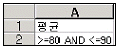
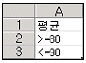
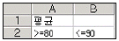
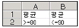
(정답률: 34%)
25. 다음 차트에 대한 설명으로 옳지 않은 것은?
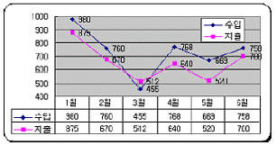
- 데이터 레이블의 ‘값 표시’가 적용되어 있다.
- ‘데이터 레이블 표시’와 ‘범례 표시’가 적용되어 있다.
- 차트 영역에 ‘그림자’와 ‘모서리를 둥글게’가 적용되어 있다.
- Y(항목)축 교점은 ‘0’이다.
(정답률: 64%)
26. 다음 중 피벗 테이블에 대한 설명으로 옳지 않은 것은?
- 피벗 차트는 피벗 테이블을 만들지 않고는 만들 수 없으며, 피벗 테이블과 피벗 차트를 함께 만든 후 피벗 테이블을 삭제하면 피벗 차트는 일반 차트로 변경된다.
- 피벗 테이블에서 필드 단추를 다른 열이나 행의 위치로 끌어다 놓으면 데이터 표시 형식이 달라진다.
- 피벗 테이블에서는 엑셀에서 작성된 데이터를 대상으로 새로운 대화형 테이블을 만드는데 사용하며 외부 액세스 데이터베이스에서 만들어진 데이터는 호환되지 않으므로 사용할 수 없다.
- Microsoft Excel은 피벗 테이블 데이터에 대한 다양한 수준의 차트를 작성하며 피벗 테이블에서 항목을 숨기거나 자세히 나타내거나 필드를 재배열하면 차트가 변경된다.
(정답률: 55%)
27. 다음 중 화면 제어에 관한 설명으로 옳지 않은 것은?
- 틀 고정은 행 또는 열, 열과 행으로 모두 고정이 가능하다.
- 창 나누기는 워크시트를 여러 개의 창으로 분리하는 기능으로 최대 4개까지 분할할 수 있다.
- [창]-[틀 고정]을 선택하면 현재 셀의 위쪽과 왼쪽에 틀 고정선이 나타난다.
- 틀 고정선은 마우스를 드래그하여 위치를 변경할 수 있다.
(정답률: 57%)
28. 엑셀 파일을 열었더니 아래와 같은 경고창이 나타났다. 다음 중 이에 대한 설명으로 옳지 않은 것은?(제외된 문제, 문제 출제당시 오피스 2003 기준으로 출제되어 현재는 제외된 문제 입니다. 참고만 하세요.)
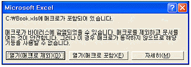
- [열기(매크로 포함)]을 클릭해야만 매크로를 실행할 수 있는 상태가 된다.
- 매크로가 포함된 파일을 열 경우, 엑셀의 보안 수준이 높음으로 설정되어 있을 경우에만 나타난다.
- 보안 수준 설정을 통해 사용자가 모르는 사이에 매크로 바이러스가 실행되는 것을 막기 위한 방법이다.
- 해당 대화상자의 표시 없이 매크로를 포함하여 문서를 열고자 할 경우 [도구]-[매크로]-[보안]에서 보안 수준을 낮음으로 선택한다.
(정답률: 36%)
29. 급여일이 홀수 달이면 기본급의 50%를 지급하고, 짝수 달이면 기본급의 100%를 보너스로 지급하고자 한다. 다음 중 [C2] 셀에 입력해야할 함수식으로 옳은 것은?([A2:A6] 셀에는 날짜 형식으로 입력되어 있으며, [C3:C6] 셀까지 채우기 핸들을 사용할 예정이다.)
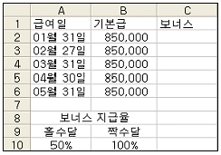
- =IF(MOD(MONTH(A2), 2)=1, B2*$A$10, B2*$B$10)
- =IF(MOD(A2)=1, B2*$A$10, B2*$B$10)
- =IF(MONTH(A2)=1, B2*$A10, B2*$B10)
- =IF(MOD(A2)=1, B2*$A10, B2*$B10)
(정답률: 54%)
30. 자료가 입력된 [Sheet1]을 인쇄하니 5장이 출력되어 [Sheet1]의 모든 자료를 1장에 인쇄하려고 한다. 방법으로 올바른 것은?
- [파일]-[인쇄]-[등록정보]-[기능]에서 ‘한 페이지에 여러 페이지 인쇄’를 선택한 후 인쇄한다.
- [파일]-[인쇄]-[등록정보]에서 ‘자동맞춤’을 선택하여 용지와 높이를 각각 ‘1’로 한 후 인쇄한다.
- [파일]-[페이지 설정]-[페이지]에서 ‘자동맞춤’을 선택하여 용지와 높이를 각각 ‘1’로 한 후 인쇄한다.
- [파일]-[페이지 설정]-[페이지]에서 ‘한 페이지에 여러 페이지 인쇄’를 선택한 후 인쇄한다.
(정답률: 46%)
31. 다음과 같은 조건을 만족하도록 사용자 정의 셀 서식을 작성한 것으로 옳은 것은?
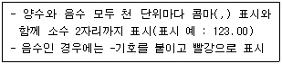
- 0,00#.##;[빨강]-0,00#.##
- _-#,##0.00;[빨강]_-#,##0.00
- #,##0.00;[빨강]-#,##0.00
- *#,##0.00;[빨강]*-#,##0.00
(정답률: 60%)
32. 다음 중 셀에 ‘07-12-25’를 입력한 후 결과가 ‘December 25, 2007’로 표시되도록 하기 위한 사용자 정의 표시 형식으로 옳은 것은?
- mm dd, yyyy
- mmm dd, yyyy
- mmmmm dd, yyyy
- mmmm dd, yyyy
(정답률: 56%)
33. 다음 중 외부 데이터베이스에서 작성된 데이터를 읽어 들이는 방법 3가지를 올바르게 나열한 것은?
- Microsoft Query 사용, Microsoft Visual Basic 사용, 레코드 관리
- Microsoft Query 사용, Microsoft Visual Basic 사용, 웹 쿼리 사용
- Microsoft Query 사용, 웹 쿼리 사용, 필터
- 통합 문서 공유, Microsoft Query 사용, 웹 쿼리 사용
(정답률: 53%)
34. 다음 중 통합문서 작업에 관한 설명으로 옳지 않은 것은?
- 워크시트의 데이터를 html 문서나 텍스트 파일로 변환하여 저장할 수 있다.
- 공유 통합 문서에서 변경 내용이 충돌할 경우는 변경 내용이 적용되지 않는다.
- 공유 통합 문서의 복사본을 원본과 합쳐 하나로 만드는 작업이 가능하다.
- 문서의 형식이나 스타일 정보는 *.xlt 파일에 따로 저장하여 사용할 수 있다.
(정답률: 44%)
35. 다음과 같은 이벤트 프로시저를 생성하였을 경우 어떤 일이 발생하는가?
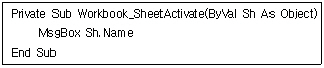
- 활성화 워크시트가 바뀔 때마다 활성화된 워크시트의 이름을 메시지 상자로 나타낸다.
- 활성화 워크시트가 바뀔 때 바뀌기 전의 워크시트의 이름을 메시지 상자로 나타난다.
- 활성화 워크시트가 바뀔 때 현재 활성화된 셀의 값을 메시지 상자로 나타난다.
- 활성화 셀이 바뀔 때마다 현재 활성화된 셀의 값을 메시지 상자로 나타난다.
(정답률: 54%)
36. 다음 중 매크로에 대한 설명 중 옳지 않은 것은?
- 개인용 매크로 통합 문서에 저장한 매크로는 워크시트가 열리지 않은 상태에서도 실행이 가능하다.
- 매크로를 실행할 때 현재 셀의 위치에 따라 매크로가 적용되는 셀이 달라지도록 하려면 절대 참조로 기록하도록 매크로 기록기를 설정한다.
- 매크로는 통합 문서에 첨부된 모듈 시트에 저장된다.
- 키보드나 마우스의 동작에 의해 매크로를 작성하더라도 엑셀에서는 Visual Basic 언어로 작성된 매크로 프로그램이 자동으로 생성된다.
(정답률: 44%)
37. 다음 매크로의 코드에 대한 설명으로 맞지 않은 것은?
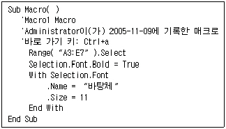
- 바로 가기 키는 주석처리 되어 실행되지 않는다.
- 매크로의 이름은 Macro1이다.
- 셀 A3:E7 범위에 대해서 매크로가 적용된다.
- 선택된 셀 범위의 폰트는 굵게, 바탕체, 크기 11로 변경된다.
(정답률: 60%)
38. 다음 중 부분합을 산출하기 위한 실행 순서의 번호가 바르게 나열된 것은?
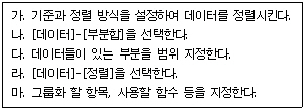
- 다→라→가→나→마
- 다→가→마→라→나
- 라→다→가→나→마
- 라→가→나→마→다
(정답률: 48%)
39. 다음 중 지도 차트 작성 시 유의 사항으로 옳지 않은 것은?(제외된 문제, 문제 출제당시 오피스 2003 기준으로 출제되어 현재는 제외된 문제 입니다. 참고만 하세요.)
- 엑셀에서 제공되는 지도의 종류는 한정되어 있기 때문에 사용자가 원하는 모든 종류의 지도를 작성할 수 없다.
- [Microsoft Map 옵션] 대화상자에 새 지도 작성 시 기본 값으로 사용할 옵션이 [수동]으로 설정되어 있을 경우, 지도에 사용된 데이터를 변경하면 그에 따라 지도도 최신 데이터로 수정된다.
- 데이터가 국가별, 지역별로 정렬되어 있어야 효과적인 지도를 작성할 수 있다.
- 입력 데이터를 피벗 테이블과 같은 기능을 이용하여 선행 분석하면 효과적인 지도를 작성할 수 있다.
(정답률: 41%)
40. 다음 중 한자와 특수 문자 입력에 대한 설명으로 틀린 것은?
- 한글 자음(ㄱ, ㄴ, ...., ㅎ) 중 하나를 입력한 후 [한자] 키를 누르면 화면 하단에 특수 문자 목록이 표시된다.
- 국과 같이 한자의 음이 되는 글자를 한 글자를 입력한 후 [한자]키를 누르면 화면 하단에 해당 글자에 대한 한자 목록이 표시된다.
- 한글 쌍자음 ㄸ을 입력한 후 [한자] 키를 누르면 화면 하단에 어떤 목록도 표시되지 않는다.
- 각각의 한글 자음에 따라서 화면 하단에 표시되는 특수 문자가 다르다.
(정답률: 67%)
3과목: 데이터베이스 일반
41. 다음 중 데이터베이스 언어에 대한 설명으로 옳지 않은 것은?
- 데이터 보안, 데이터 복구, 권한 등의 관리를 위해 사용되는 언어를 데이터 제어어(DCL)라 한다.
- 데이터베이스나 테이블의 생성 또는 변경 등을 위해 사용되는 언어를 데이터 정의어(DDL)라 한다.
- 데이터 제어어는 주로 데이터베이스 관리자에 의해 사용된다.
- 데이터 구조의 삭제 또는 변경을 위해 사용되는 언어를 데이터 조작어(DML)라 한다.
(정답률: 35%)
42. 다음 중 보고서에서 ‘그룹 머리글’의 ‘반복실행구역’ 속성을 ‘예’로 설정한 경우에 대한 설명으로 가장 적절한 것은?
- 해당 머리글이 매 레코드마다 표시된다.
- 해당 머리글이 매 페이지마다 표시된다.
- 해당 머리글이 매 그룹의 시작과 끝 부분에 표시된다.
- 해당 머리글이 매 보고서의 시작과 끝 부분에 표시된다.
(정답률: 34%)
43. 다음 질의문 중에서 가장 올바르지 않은 것은 무엇인가?
- select * from 학생;
- select 학생.* from 학생;
- select 학생.* from 학생 학과;
- select 학생.* from 학생, 학과;
(정답률: 56%)
44. 구역이나 컨트롤에 입력된 데이터의 양에 따라 구역과 컨트롤의 높이가 자동으로 조절되도록 하는 보고서의 속성은 다음 중 어느 것인가?
- 확장/축소
- 중복 내용 숨기기
- 정렬/그룹화 필드
- 자동 서식
(정답률: 35%)
45. 다음 중 쿼리에 대한 설명으로 옳지 않은 것은?
- 선택 쿼리나 크로스탭 쿼리를 열면 쿼리가 실행되고 그 결과를 데이터시트 보기 형태로 표시한다.
- 실행 쿼리를 실행하면 데이터가 변경되며, 변경된 사항은 <실행 취소>를 통해 원래대로 되돌릴 수 있다.
- 쿼리 속성에서 원본으로 사용하는 테이블 레코드 전체 또는 편집 중인 레코드만 잠금을 설정할 수 있다.
- 선택 쿼리를 저장해 놓으면 그 쿼리의 결과를 테이블처럼 사용할 수 있다.
(정답률: 38%)
46. 다음 중 레코드 원본의 데이터나 계산 결과를 표시해 주는 컨트롤은 어느 것인가?
- 레이블
- 입력란(텍스트 상자)
- 확인란
- 콤보 상자
(정답률: 33%)
47. 다음 중 아래의 OpenForm 매크로 함수의 인수 설명으로 옳지 않은 것은?
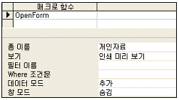
- 폼 이름 : 열려는 폼의 이름으로 선택 요소이다.
- 보기 형식 : ‘폼’, ‘디자인’, ‘인쇄 미리 보기’, ‘데이터시트’ 중 하나를 클릭하며 기본값은 ‘폼’이다.
- 데이터 모드 : ‘추가’, ‘편집’, ‘읽기 전용’ 중 하나를 선택할 수 있다.
- 창 모드 : 폼을 여는 창 모드로 ‘기본’, ‘숨김’ , ‘아이콘’, ‘대화상자’ 중에서 하나를 선택하며, 기본값은 ‘기본’이다.
(정답률: 33%)
48. 모든 직원들을 근무연수가 많은 사람부터 시작하도록 정렬하고, 근무연수가 같은 경우 나이가 많은 사람이 먼저 오도록 하는 질의로 적절한 것은?
- select * from 직원 order by 나이 desc, 근무연수 desc;
- select * from 직원 order by 나이 asc, 근무연수 asc;
- select * from 직원 order by 근무연수 desc, 나이 desc;
- select * from 직원 order by 근무연수 asc, 나이 asc;
(정답률: 60%)
49. 다음 중 아래의 설명에 해당하는 보고서는 어느 것인가?
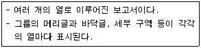
- 차트 보고서
- 크로스 탭 보고서
- 주소 레이블 보고서
- 폼 보고서
(정답률: 38%)
50. 다음 중 보고서에서 순번 항목과 같이 그룹 내의 데이터에 대한 일련번호를 표시하기 위해 해당 입력란 컨트롤을 설정하는 방법으로 가장 적절한 것은?
- 입력란의 컨트롤 원본을 ‘=1’로 지정하고, 누적합계를 ‘그룹’으로 지정한다.
- 입력란의 컨트롤 원본을 ‘+1’로 지정하고, 누적합계를 ‘그룹’으로 지정한다.
- 입력란의 컨트롤 원본을 ‘+1’로 지정하고, 누적합계를 ‘모두’로 지정한다.
- 입력란의 컨트롤 원본을 ‘=1’로 지정하고, 누적합계를 ‘모두’로 지정한다.
(정답률: 48%)
51. 다음 중 폼에 대한 설명으로 적절치 않은 것은?
- 폼을 사용하여 데이터베이스의 보안성을 높일 수 있다.
- 폼에 데이터가 연결되어 있는지의 여부에 따라 바운드 폼과 언바운드 폼이 구분된다.
- 언바운드 폼은 테이블의 내용을 표시하는 경우에 사용된다.
- 폼 모양에는 컬럼 형식 폼, 탭 형식 폼, 데이터시트 폼 등이 있다.
(정답률: 49%)
52. 다음 중 다른 폼에 삽입된 하위 폼에 대한 설명으로 적절하지 않은 것은?
- 기본이 되는 폼을 기본 폼, 기본 폼 안에 들어 있는 폼을 하위 폼이라고 한다.
- 하위 폼을 사용하면 일대다 관계에 있는 테이블을 효과적으로 표시할 수 있다.
- 하위 폼에는 기본 폼의 현재 레코드와 관련된 레코드만 표시된다.
- 하위 폼은 일대다 관계의 일 쪽에 있는 데이터를 표시한다.
(정답률: 63%)
53. 다음 중 액세스에서 테이블로 가져오거나 연결할 수 있는 파일의 형식이 아닌 것은?
- HTML 문서
- Microsoft Excel 문서
- 텍스트 파일 문서
- 아래아한글(hwp) 문서
(정답률: 67%)
54. 다음 중 입력 마스크를 아래와 같이 정의하고 ‘sun’, ‘moon’의 데이터를 각각 입력하였을 때 테이블에 입력된 결과는?
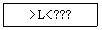
- SUN, MOON
- sun, moon
- Sun, Moon
- sUN, mOOn
(정답률: 58%)
55. 회원(회원번호, 이름, 나이, 주소) 테이블에서 회원수가 몇 명인가를 알아보기 위한 질의문으로 옳은 것은?
- select sum(*) as 회원수 from 회원
- select count(*) as 회원수 from 회원
- insert count(*) as 회원수 from 회원
- insert sum(*) as 회원수 from 회원
(정답률: 63%)
56. 레이블은 폼 또는 보고서의 제목이나 글자 등 텍스트를 표시하는 컨트롤이다. 레이블에 대한 다음 설명 중 가장 옳지 않은 것은?
- 레이블은 항상 바운드 컨트롤이다.
- 레이블은 다른 컨트롤에 덧붙일 수 있다.
- 레이블은 필드나 식의 값을 표시하지 않는다.
- 레이블이 나타낼 문자는 캡션 속성에 지정한다.
(정답률: 48%)
57. 실행 관련 매크로 함수 중 응용프로그램을 실행하기 위해 필요한 매크로는?
- RunCommand
- RunMacro
- RunApp
- RunSQL
(정답률: 43%)
58. 다음 중 데이터베이스의 인덱스 개념에 대한 설명으로 옳지 않은 것은?
- 인덱스를 설정할 경우 속성에서 중복 가능, 중복 불가능을 선택할 수 있다.
- 언제든지 테이블 디자인 보기에서 인덱스를 추가하거나 삭제할 수 있다.
- OLE 개체, 하이퍼링크의 형식 필드는 인덱스할 수 없다.
- 인덱스를 설정하면 테이블의 정렬과 그룹화를 빨리 수행하여 자료의 갱신(Update) 속도가 빨라진다.
(정답률: 48%)
59. 다음 중 테이블에 데이터가 입력되는 방식을 제어하는 방법에 대한 설명으로 옳지 않은 것은?
- 유효성 검사 규칙을 정의하여 필드에 입력되는 데이터를 제한할 수 있다.
- 필드의 각 위치에 입력할 수 있는 값의 종류를 제한하는 입력 마스크를 작성할 수 있다.
- 복잡한 유효성 검사를 수행하기 위해서는 매크로를 사용할 수 있다.
- 필드의 표시 형식 속성을 이용하여 입력되는 숫자의 소수점 자리수를 지정할 수 있다.
(정답률: 22%)
60. 개체관계도(ERD) 에 표현할 수 있는 요소에 대한 설명으로 잘못된 것은?
- 참조관계 : 개체와 속성들 간의 관련성
- 속성 : 개체의 성질이나 상태
- 기본키 : 개체를 구별할 수 있는 식별자
- 관계종류 : 일대일, 일대다, 다대일, 다대다 관계
(정답률: 23%)
이유는 범용 컴퓨터는 디지털 신호를 처리하는데 최적화되어 있기 때문에, 아날로그 신호를 처리할 때는 변환 과정이 필요합니다. 이 변환 과정에서 정보의 정밀도가 손실될 수 있기 때문에, 아날로그 신호를 처리할 때는 정밀도가 제한적일 수 있습니다.